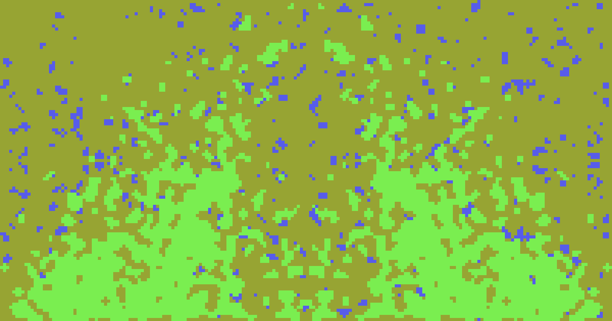
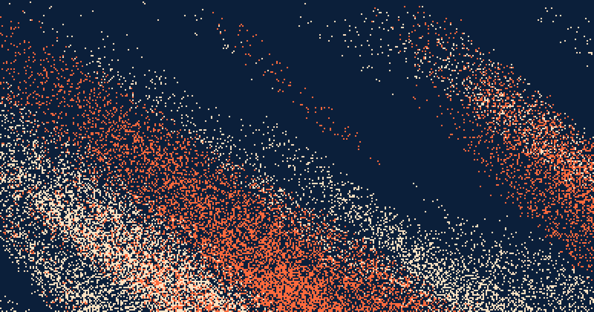
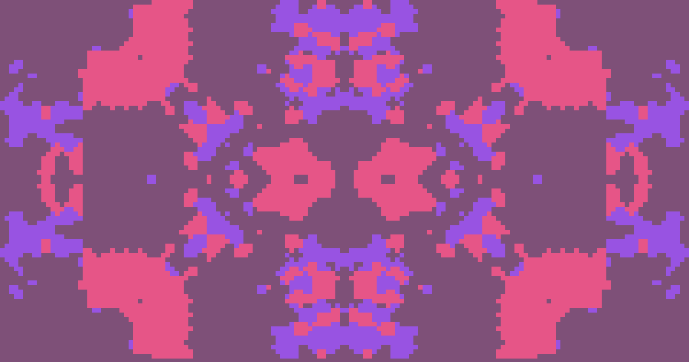
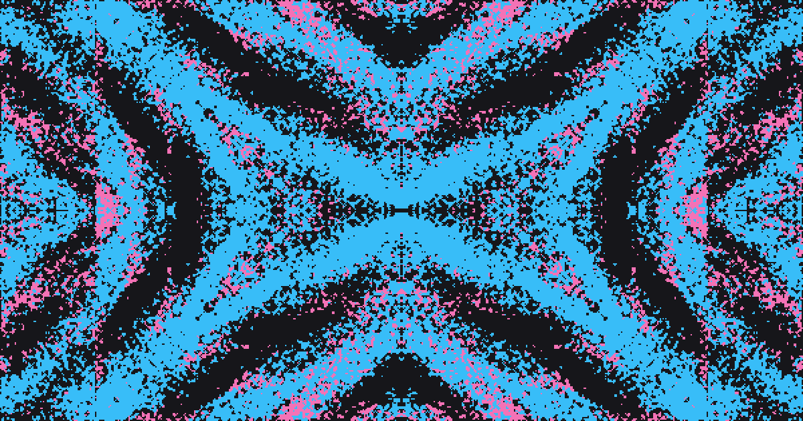
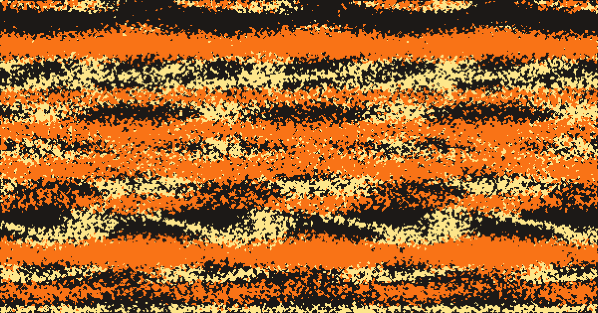
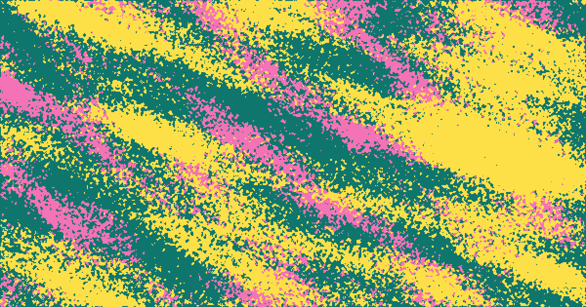
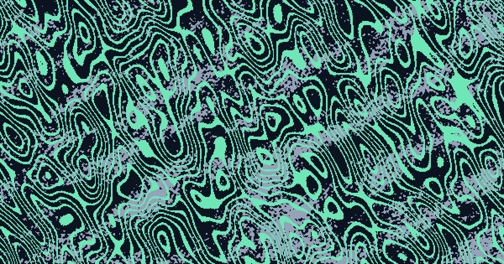

Using Flield
Flield builds three-color compositions from seeded flow fields and symmetry. Pressing Random shows you what it does; everything below is about steering it toward something you meant.

The basics
- Every composition is three colors: a background, plus two independently generated artwork layers.
- Each layer runs on its own seed, so the same seed and settings always regenerate the same result.
- On a wide screen the canvas sits on the right and every control that shapes it lives in the sidebar on the left. On a phone the controls move to a bar along the bottom and the canvas takes the rest of the screen. The Flield name and the site links share one strip under the artwork on both.
- Every page load opens on a freshly randomized composition instead of a fixed default, background color, block size, and shape mask aside (more on why in Locks). A phone held upright starts on the Mobile preset, so the artwork fills the screen it is being viewed on; a shared link always arrives at the dimensions it was made with.
In-app tutorial
Everything on this page is also built into the app itself. The button, at the bottom of the sidebar next to Copy Link, and at the end of the settings panel on a phone, opens a thirteen-step tutorial. Each step is paired with a small live example of the control it's describing.
On a first visit, a small Take the tour prompt appears above the canvas. Take it or dismiss it and it won't come back; the button opens the tutorial anytime. Step through with the arrows, the dots at the bottom, or the left and right arrow keys.
Using the controls
Tabs
| Tab | What it holds |
|---|---|
| General | Canvas width and height (with Web, Tablet, Mobile, and Tile presets; a preset's chip stays lit while the values still match it), background color, grid resolution (block size), shape mask, and motion |
| Layer A / Layer B | That layer's seed, color, palette range, density range, flow field, symmetry mode, and smoothing |
On a phone
The controls split in two. Undo, Auto-randomize, Random, and a button for each of the two panels sit in a bar fixed along the bottom, within reach of a thumb, so working through the exploration loop never costs an opening and a closing.
The two panel buttons raise a sheet over the lower part of the screen: one holds the settings, the other holds exporting and sharing. Whichever panel is showing, its button stays lit.
Press that one again to put the sheet away, or the other to swap panels without the sheet moving. Dragging it down by the handle along its top dismisses it, as does tapping the artwork or pressing Escape.
The sheet stops short of the artwork rather than covering it, and the canvas shrinks to whatever is left, so a slider can be judged against the result as it moves. Drag the handle upward instead and the sheet takes more of the screen, for when the settings matter more than the view.
Whichever setting you last reached for stays behind when the sheet closes, on a single row above the bar. That way a value can be dialled in against the artwork at full size rather than through a narrow preview. Its own close button puts the row away.
Sliders
The click and drag target reaches well past the thin line you see, so grabbing a slider doesn't take a precise hit.
Flow scale is measured in canvas pixels, so a setting reads the same at any block size. Field strength puts clear banding around the middle of its range; a link or saved slot from before this change loads with its strength halved and renders exactly as it did.
Scrolling
A tab's content can run longer than the sidebar is tall. A soft fade shows up at whichever edge, top, bottom, or both, still has more to see, and clears once you've scrolled all the way to that edge.
On a short screen, a phone held sideways or a window dragged down to a sliver, the column scrolls as one piece instead, with the top row of controls staying put and the fades sitting that one out.
Holding to confirm
A handful of controls throw away something that can't be got back, so a press on its own no longer runs them. Hold the button instead: it fills from left to right and fires the moment it is full, about a second in. Let go early and nothing happens beyond a reminder to hold. Reaching them from the keyboard activates them directly, with no wait.
- Lock All and Unlock All, which replace every lock you had set.
- Undo, which steps back without recording what it replaced, so there is no forward again. On a phone it also sits a thumb's width from the play button.
- Loading a slot, which drops the composition on screen for the saved one.
- Saving over a slot that already holds something, since that one outlives the tab. Saving into an empty slot is a plain press: there is nothing there to lose.
Confirmations
A few actions change something that might not be on screen right now, like Lock All changing icons on a layer tab that isn't open. Those show a brief confirmation above the canvas: Lock All and Unlock All, Undo, saving or loading a slot, and Copy Link.
Locks
Every randomizable field, background color, block size, and shape mask included, has a small lock icon next to it.
- A locked field holds its current value through a randomize pass instead of getting a new one.
- Lock and Unlock, the row under Random, apply to every field at once.
- Each tab's button shows a small padlock when any of its fields are locked, solid once all of them are, and hovering it gives the exact count, so Lock All or a lock on another tab never goes unnoticed.
- Background color, block size, and shape mask start locked. That's why a fresh page load keeps its starting background, grid resolution, and shape steady while everything else randomizes around them. Unlock any of the three to fold it into future randomize and Auto-randomize passes.
Tiling without a seam
The Tile preset, on the General tab next to Web, Tablet, and Mobile, sets up a square canvas that repeats without a visible seam. It does three things at once:
- Turns off the shape mask.
- Switches both layers to 4-way mirror symmetry, which makes each layer's left edge match its right edge, and its top edge match its bottom edge, exactly.
- Locks both settings, so Random and Auto-randomize keep exploring colors, density, and flow field without breaking the seam.
Saving and sharing a composition
| Saved States | Copy Link | |
|---|---|---|
| Where it lives | Your browser's local storage | A URL |
| How many | 3 slots (General tab) | Unlimited |
| Works across devices and people | No | Yes |
| Survives a reload | Yes | Yes, and forever |
| Remembers which fields are locked | Yes | Yes |
| Can offer Auto-randomize on open | No | Yes, choose Offers to play in the menu beside Copy Link; the recipient gets a prompt to play it or keep the still |
Each saved slot shows its three colors and the time it was saved, so you can tell them apart before loading one.
Both capture the exact same thing: colors, both layers, and the lock set. A loaded slot or an opened link is ready for Random or Auto-randomize the way it was set up.
Use Saved States to bookmark a composition for yourself; use Copy Link, at the bottom of the sidebar, to hand an exact reproduction to someone else, or to yourself on a different device.
Keyboard shortcuts
| Key | Action |
|---|---|
| R | Random (reroll every unlocked field) |
| Space | Start or stop Auto-randomize |
| Cmd+Z / Ctrl+Z | Undo the last randomize pass |
All three stay out of the way while you're typing in a field, and the legend sits in the footer under the canvas.
Exploring an art direction with Auto-randomize
- Press Random to reroll every unlocked field at once. Good for a first look, but left alone this just cycles through unrelated compositions. A roll is steered, not blind: the two layers are kept apart in hue and both are kept apart from the background in lightness, as far as each layer's Palette Range allows, so three random colors still read as three.
- Lock down what you want to keep, and let the rest stay unlocked. For example: lock a layer's seed and symmetry, leave density and flow field unlocked.
- Click the Auto-randomize button, the play arrow next to Random, to repeat that reroll on a timer, from every second up to every 10. The same interval is how long one motion cycle takes.
What comes through is a run of variations that share the same underlying structure, small differences in fill and texture on a shape that stays recognizable. It reads less like random noise and more like a designer trying variations on one idea.
Three examples, each thirteen passes at a two-second interval. What differs between them is only what was locked.
Full random

Brand campaign

Kaleidoscope variations

Took a wrong turn? Undo, the arrow at the left of the Random row, steps back through recent randomize passes, most recent first, and grays out once there's nothing left to undo.
GIF export is the same loop, captured. The step count option (3, 5, 8, 13) runs that same randomize sequence, frame by frame, at the Auto-randomize interval as the per-frame delay, the exact sequence Auto-randomize would generate rather than whatever the artboard happens to be showing at the moment.
Motion and animated exports
Motion, in the General tab, holds every setting and both seeds and animates the composition on screen so the last frame flows straight into the first, with no visible cut. There are four kinds beside None: Loop, Drift, Wind, and Pulse. Pick one and the canvas plays it straight away, which is also exactly what a GIF will record.
Loop
Breathes the flow field around a small closed path, one full turn across the frames. Each cell's dither is fixed by the seed, so shapes grow, shrink, and slide rather than flicker.

Drift
Flows the field one way along its flow direction and travels exactly one period, so the pattern's density envelope repeats along that axis at flow scale times stretch pixels.

Wind
Drift with weather. The field flows the same way and the same distance, but a second, much broader noise field bends where it's sampled, rising and settling once per cycle like a gust.
Fine detail travels twice as far as the broad shapes, so wisps run ahead of the streaks they belong to. The gust starts and ends at nothing, so the cycle opens on Drift's first frame and the bending rises and settles once through it.

Pulse
Swings density with one sine wave, 40% of each layer's density either way, so the composition inflates and thins. Cells appear and vanish in a stable order, so it breathes rather than sparkles. It's the one kind that moves without any field strength.

Each kind is one cycle, and a cycle lasts as long as the interval set beside the play button. The same speed governs how fast a composition moves and how often it rerolls.
Leave Auto-randomize running as well and the two combine: every pass rerolls, animates through one full cycle, then cuts to the next. The GIF length menu says how many passes to record.
Motion on its own has nothing to advance between passes, so it records one looping cycle whatever the length says.
Layer B moves with Layer A rather than in lockstep, like two depths of one flow field:
| Kind | How Layer B differs |
|---|---|
| Drift and Wind | Its heading is its own flow direction, and its speed follows its own flow scale and stretch. Wind's gust bends it from a point an eighth of a turn round, as in Loop. |
| Loop | It circles the same way, from a point an eighth of a turn further round. |
| Pulse | It swings the same way, at 70% of the depth. |
Picking any of them plays that kind on the canvas right away, at the export's own frame rate, so what you see is what the file will be. Pick a step count to put the still back.
Loop, Drift, and Wind need some field strength to have anything to move. All four make bigger files than stills, since a cycle is tens of frames instead of one per pass. A whole export is capped at 240 frames, so a long one loses smoothness rather than running away with the file size, and larger blocks bring it down further.
Widening or narrowing with Palette Range and Density Range
Each layer has two collapsible range controls, both collapsed by default:
- Palette Range constrains the hue, saturation, and lightness a randomized color is allowed to land in, instead of picking from the full wheel.
- Density Range does the same for Base density, constraining how full or empty a randomized layer is allowed to get. It defaults to a window of 0 to 0.5, since an unconstrained density can randomize all the way to 1.0 and fill a layer with a solid, flat color.
| Effect | |
|---|---|
| Narrow range (or a Palette Range preset like Pastel or Monochrome) |
Every randomized value stays in a tight, cohesive family. Combined with locks and Auto-randomize, this produces a narrow, tasteful band of variations that all read as the same idea. |
| Wide range (or Full spectrum, for Palette Range) |
The value drifts much further between passes, so the same locked structure gets explored with far more contrast and variety. |
Narrowing or widening a range doesn't change what's locked or unlocked; it changes how far a single unlocked field is allowed to wander. That's the difference between exploring a tight variation on one idea and exploring a much broader one.
Using what you make
Images you make with Flield are yours. Use them anywhere, commercially included, with no attribution required. Nothing needs to be credited and nothing needs to be asked for.
The tool's own noncommercial license is a separate matter: it governs the source code in the repository, not the artwork the code produces. Building the tool into a paid product is the thing that needs a license; exporting a PNG and putting it behind a client's logo is not.